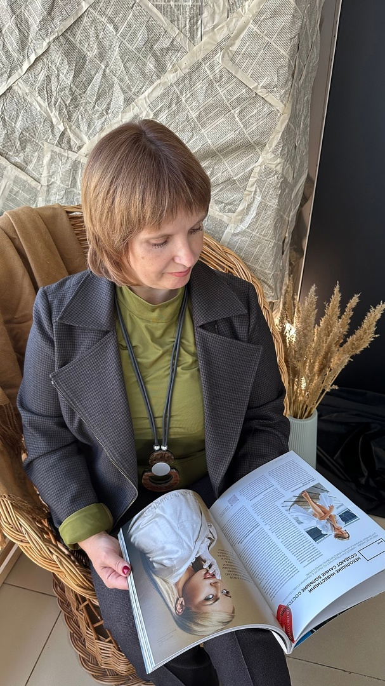
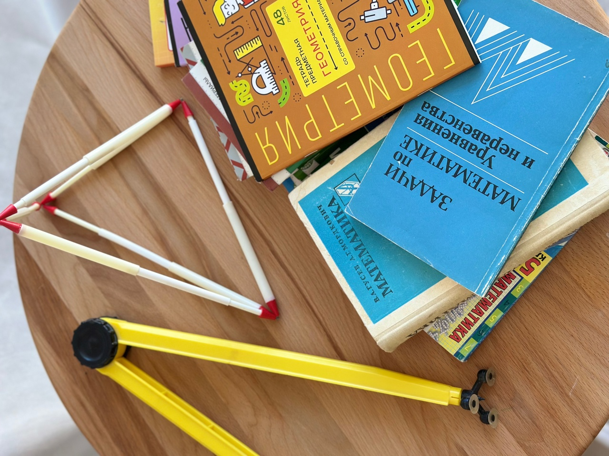

Каналы на YouTube и Telegram не приносили желаемого результата из-за недостатка качественного контента. Хотела расширить аудиторию, увеличить количество клиентов. После прохождения курса репетитор по математике из Москвы Елена Костылева научилась грамотно выстраивать стратегию привлечения клиентов и улучшила свои навыки создания контента.
Это позволило ей поднять стоимость уроков вдвое, и вырасти в доходах в 2,5 раза до 100 тысяч рублей в месяц. Смогла осуществить несколько важных покупок, включая автомобиль, и оплатить обучение своему сыну.
— Лена, расскажи, что было до курса, какой средний доход был в месяц? Сколько клиентов?
— До курса ученики были только с Яндекс услуг. Доход был в среднем 40 000 при загруженности 4 дня в неделю. Был очень хороший момент, что доход составлял до 240 000 руб. при загруженности 6 дней в неделю. Но как-то это быстро закончилось(
Учеников одновременно было от 6 до 11. Был свой канал на ютубе и телеграм. Каналы не особо пользовались спросом. Проблема была в контенте. Не знала что писать, как писать. Хотела завести группу ВК, но и здесь проблема. Понимала, что привлечь людей туда не получится.
При общении с клиентами, всегда ощущала себя виноватой, что высокая цена занятия. Многие об этом сообщали, я соглашалась и тем самым теряла клиента. Первое диагностическое занятие было всегда бесплатное.
Мечта была перейти от индивидуальных занятий к мини группам. Но сейчас уже склоняюсь к курсам)
— Какие сложности были во время обучения на нашем курсе? Насколько сложно было учиться? За сколько прошла обучение?
— Сложностей во время обучения не было никаких. Всё на столько понятно. Хочешь смотри на видео, хочешь читай конспект, плюс скриншоты со всеми шагами, про все кнопочки, которые нужно нажать. На каждый урок уходило примерно 30-40 минут. Из-за нехватки личного времени обучение до конца не прошла, приходится постоянно откладывать.
Но, ложка дёгтя. После уроков я поняла, что повторить, например, с другой группой по памяти не смогу. Т.к. все действия, которые необходимо было совершать сделаны просто шаблонно, без какого-то понятия для чего и почему так. Просто было сказано нажать определённую последовательность кнопок, ты нажимаешь и всё. Работает, радуешься. Но, курс остаётся навсегда, поэтому эта проблема решаема. Просто нужно будет ещё раз перечитывать.
— Ну тут ведь много технических моментов и их не так-то просто запомнить, в принципе, если ты не делаешь эти действия каждый день) Как считаешь, куратор был бы тебе полезен? Было бы легче, понятней?
— Лично мне куратор был незачем. Было настолько всё понятно, куда ещё понятней? Даже не могу предположить функции куратора. Для того, чтобы вовремя выполнять задания? Так для этого вы сами постоянно напоминали. Чтобы проверить правильно ли сделано? Так по урокам так все понятно, что нужно постараться чтобы сделать не правильно)

А, я вспомнила, в чем была сложность в курсе. Это работа в дизайнерских программах. Когда делаешь обложки, картинки для менюшки... Вот это мне было сложно)
— Какие сейчас действия делаешь для привлечения клиентов? Как часто пишешь посты? Запускаешь ли рекламу?
— Продолжаю размещать объявление на Яндекс услугах, сделала личную страницу ВК, группу ВК, канал в телеграм. Прошла курс Пиши-посты-огонь. Теперь с лёгкостью пишу ежедневно посты, иногда через день, которые размещаю не только в ВК, но и в телеграм.
Также проводила бесплатный марафон по подготовке к ОГЭ, после которого появился клиент, которая оплатила вебинары, а на следующий учебный год планирует приобрести курс. Рекламу пока не запускала, и скорее всего не буду запускать. Но это не точно)

— А можешь поделиться, как изменилась жизнь, когда увеличился доход? Может что-то купила себе? Съездила в путешествие? Что-то смогла сделать, чего раньше не могла позволить себе?)
— Все в обучение) У вас и не только. Сначала я купила курс ВК бабло в рассрочку, затем, посчитала, и поняла, что могу увеличить ежемесячный платёж и приобрела ещё Огонь посты в рассрочку. А через какое-то время купила новый курс по видеоклипам и уже не в рассрочку. Плюс все свои платежи я погасила досрочно.
Плюс, я отучилась на права. Отучила сына на права, на две категории. Купила себе машину. Да, б/у, за 340 000 руб. И не в кредит, а наличными.
— Все, остался только вопрос, сколько сейчас зарабатываешь? Сколько в среднем в месяц? Сколько клиентов? А вот примерно сколько за год было прошедший заработано?
— Сейчас я ушла на каникулы). 4 года не отдыхала! Поэтому, с июня я не работаю. Но, я увеличила стоимость урока в 2 раза за год. За этот год было около 15 учеников. За учебный год заработала около 1 170 000 руб.
— То есть ты с 40 тысяч вышла на стабильные 100 тысяч в месяц, верно?
— Где-то да)
— Лена, спасибо тебе за ответы. Была рада получить твою обратную связь. Желаю дальнейшего роста!